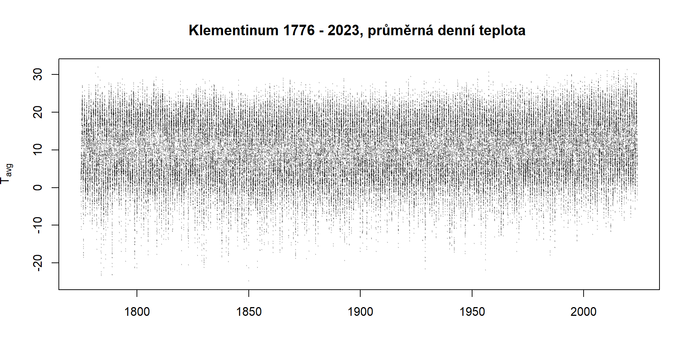
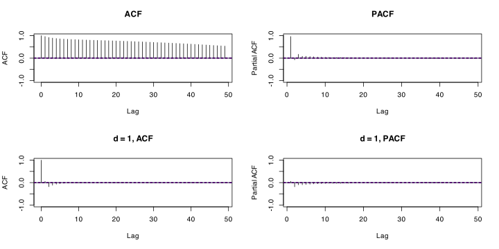
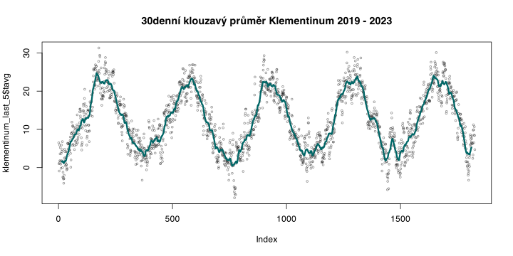

Umět aplikovat klouzavý průměr jako zhlazovací funkci.
Časové řady jsou chronologicky uspořádané posloupnosti hodnot jednoho nebo více statistických ukazatelů.
\[
Y(t) = f(t)
\]
Časové řady rozeznáváme deterministické, stochastické s konstantním nebo proměnlivým časovým krokem. Časovou řadu nazýváme homogenní, pokud hodnoty jednolivých členů pozorované řady odrážejí pouze přirozenou proměnlivost studované veličiny.
Funkce pro základní statistické zpracování časových řad opět nalezneme v balíčku stats.
Kód
args(stats::ts)
function (data = NA, start = 1, end = numeric(), frequency = 1,
deltat = 1, ts.eps = getOption("ts.eps"), class = if (nseries >
1) c("mts", "ts", "matrix", "array") else "ts", names = if (!is.null(dimnames(data))) colnames(data) else paste("Series",
seq(nseries)))
NULL
Další zdroje
Zpracování časových řad je jedním ze základních tématických okruhů v R. Stejně jako je tomu u ostatních okruhů, můžeme může být užitečné se zorientovat studiem příslušného CRAN Task View.
Budeme pracovat se dvěma datovými sadami:
Časovou řadou historických měření z pražského Klementina od roku 1776.
Vnitřní datová sada R co2, kterou nahrajete pomocí funkce data()
10.1ts() objekt
Úloha
Nejprve vhodnou funkcí nahrajte datovou sadu klementinum.rds.
Vytvořte formát datumu (Date) sjednocením sloupců yr, mon, day. U sloupců s denními a měsíčními hodnotami je nutné nejprve doplnit na dvoumístný formát (napří. 02 místo 2). Použijte nápovědu k funkci sprinft().
Výsledek by měl vypadat takto:
yr mon day tavg tmax tmin sra date
1 1775 1 1 -7.0 -4.8 -10.1 NA 1775-01-01
2 1775 1 2 -2.2 -1.4 -5.8 NA 1775-01-02
3 1775 1 3 -1.0 0.6 -2.2 NA 1775-01-03
4 1775 1 4 0.1 2.5 -3.6 NA 1775-01-04
5 1775 1 5 2.2 3.0 1.6 NA 1775-01-05
6 1775 1 6 3.2 4.0 1.6 NA 1775-01-06
7 1775 1 7 3.5 4.0 3.1 NA 1775-01-07
Datovou sadu máme nahranou ověřte, zda se jedná o časovou řadu is.ts() a udělejte si základní obrázek o průběhu veličin s pomocí grafů. Inspirujte se v Kapitola 5.
Kód
plot(main ="Klementinum 1776 - 2023, průměrná denní teplota ", x = klementinum$date, y = klementinum$tavg, type ="p", cex =0.1, col ="#00000050", ylab =expression(T[avg]), xlab ="")

10.2 Dekompozice časové řady
Proces identifikace trendové, sezónní a cyklické složky v aditivních či multiplikativních časových řadách. Velmi silné tam, kde je silný trend nebo stabilní sezónní složka.
Trend je obecná tendence vývoje zkoumaného jevu za delší období; může být lineární či nelineární. Může být rostoucí či klesající. Časové řady bez trendu se označují za stacionární.
Model trendu můžeme odhadnout pomocí lineárního modelu lm(). Můžeme vytvořit rovnou tři varianty trendu: lineární, kvadratický a kubický. Vyhodnotíme pomocí Akaikeho informačního kritéria.
Kód
md1 <-lm(tavg ~I(date), data = klementinum)md2 <-lm(tavg ~ date +I(as.numeric(date)^2), data = klementinum)md3 <-lm(tavg ~ date +I(as.numeric(date)^2) +I(as.numeric(date)^3), data = klementinum)lapply(X =list(md1, md2, md3), FUN = AIC)
Pokud z řady odstraníme trend, sezónní a cyklickou složku, získáme řadu, která
10.3 Box-Jenkins analýza (ARIMA proces)
Tento pohled je založen na přístupu k řadě jako stochastickému procesu, který je možné zachytit kombinací autoregresní složky, integrační složky a klouzavého průměru. Využívá se pro simulace časových řad.
ARIMA(p, d, q)
10.3.1 Autokorelace
Je korelace sama se sebou.
Kód
# Define the time window and subset the dataokno <-seq(from =as.POSIXct("1990-01-01"), to =as.POSIXct("2020-12-31"), by =3600*24)klementinum90_20 <- klementinum[klementinum$date %in% okno, ]# Set up a multi-panel plotting windowpar(mfrow =c(1, 3))# Apply the plotting and trend line logicsapply(X =c(1, 30, 90), FUN =function(x) {# Create lagged variables lagged_x <- klementinum90_20$tavg[-c(1:x)] lagged_y <- klementinum90_20$tavg[-c((length(klementinum90_20$tavg) - x +1):length(klementinum90_20$tavg))]# Scatter plotplot(lagged_x, lagged_y, cex =0.5, col ="#00000080", xlab =paste("Lag", x), ylab ="Tavg",main =paste("Lag =", x))# Fit linear model and add trend line lm_fit <-lm(lagged_y ~ lagged_x)abline(lm_fit, col ="#660033", lwd =2) })
10.3.2 Parciální autokorelace
Stupeň určujeme pomocí funkce pacf(),

10.3.3 Klouzavé průměry
Klouzavý průměr je zhlazovací funkcí, jejíž využití má prostor například v odhadu cyklické složky časové řady
Úloha
Odfiltrujte posledních 5 let z data frame klementinum a uložte do proměnné klementinum_last_5.
Napíšeme shlazovací funkci pro 30denní okno a vykreslíme do grafu:
Kód
ma <-function(x, window =30) { filtr <-rep(1/window, window) stats::filter(x, filtr)}
Kód
plot(klementinum_last_5$tavg, col ="#00000075", cex =0.5, main ="30denní klouzavý průměr Klementinum 2019 - 2023")lines(ma(klementinum_last_5$tavg), col ="#006666", lwd =3)

10.3.4 Sezónní složka
Sezónní složku je možné simulovat následující rovnicí
md2 <-lm(tavg ~sin(as.numeric(klementinum90_20$date)*2*pi) +cos(as.numeric(klementinum90_20$date)*2*pi), data = klementinum90_20)plot(klementinum90_20$tavg -fitted.values(md2), type ="l")
Kód
optimize_arima <-function(ts_data, max_p =3, max_d =2, max_q =3) {# Initialize variables to store the best model and metric best_model <-NULL best_aic <-Inf best_order <-c(0, 0, 0)# Iterate over all combinations of p, d, qfor (p in0:max_p) {for (d in0:max_d) {for (q in0:max_q) {# Try to fit the model and catch errorstry({ model <-arima(ts_data, order =c(p, d, q)) model_aic <-AIC(model)# Update the best model if the current one is betterif (model_aic < best_aic) { best_aic <- model_aic best_model <- model best_order <-c(p, d, q) } }, silent =TRUE) } } }# Return the best model and its orderlist(model = best_model, order = best_order, aic = best_aic)}# Example usageset.seed(123)ts_data <-arima.sim(list(order =c(1, 1, 1), ar =0.7, ma =-0.5), n =100)result <-optimize_arima(ts_data)
Warning in arima(ts_data, order = c(p, d, q)): possible convergence problem:
optim gave code = 1
Kód
print(result$order) # Optimal (p, d, q)
[1] 1 1 1
Kód
print(result$aic) # Corresponding AIC
[1] 262.0574
Kód
md3 <-arima(x = klementinum_ts, order =c(0, 1, 1))md3